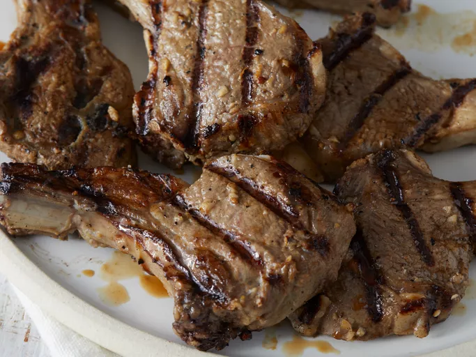

Simple Grilled Lamb Chops
Home

Description
These delicious grilled lamb chops are easy to prep with a flavorsome garlic and onion marinade before they're cooked on the grill for tender, juicy results.
Ingredients
- 1 medium onion, thinly sliced
- ¼ cup distilled white vinegar
- 2 tablespoons olive oil
- 1 tablespoon minced garlic
- 2 teaspoons salt
- ½ teaspoon black pepper
- 6 (6 ounce) lamb chops
Steps
- Combine onion, vinegar, oil, garlic, salt, and pepper in a large resealable plastic bag. Add lamb chops; coat with the marinade, squeeze out excess air, and seal the bag. Marinate in the refrigerator for 2 hours.
- Preheat an outdoor grill for medium-high heat.
- Remove lamb from marinade and leave any onions on that are sticking to the chops; discard marinade. Wrap exposed ends of bones with aluminum foil to keep them from burning.
- Cook lamb chops on the preheated grill until grill marks appear and to desired doneness, about 3 minutes per side for medium. An instant-read thermometer inserted into the center should read at least 130 degrees F (54 degrees C).
- Serve hot and enjoy!